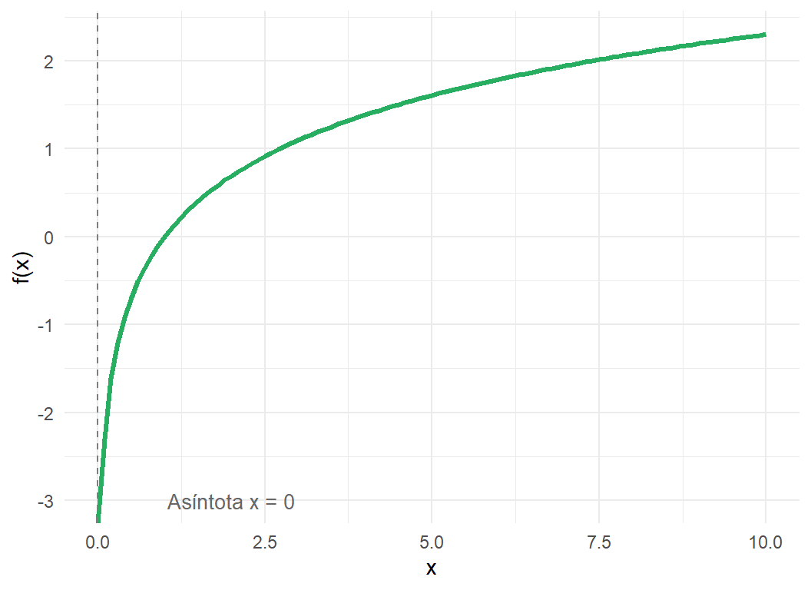
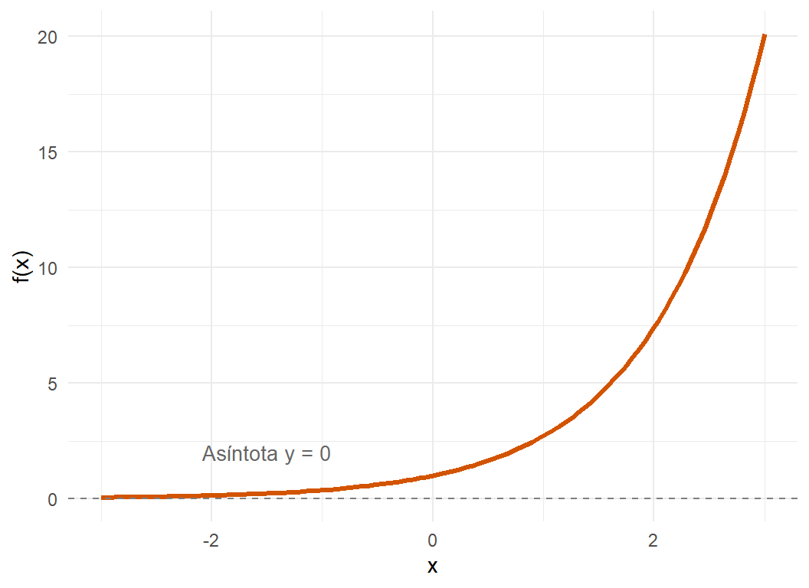

Clase 03: Álgebra de funciones
Taller de Economía Cuantitativa II
Las funciones logarítmica y exponencial
Antes de entrar a las operaciones con funciones, consideremos algunas propiedades de la función logarítmica, la cual es la inversa de la función exponencial.
Forma general: \(f(x) = \log_a(x)\) con \(a>0\) y \(a \neq 1\)
Esta función representa el exponente al que hay que elevar una base \(a\) para obtener \(x\). Como no existe ningún exponente real que haga que una base positiva dé como resultado un número negativo o cero, la función no está definida para valores menores o iguales a cero.
- Dominio: \((0, \infty)\) o \(\{x \in \mathbb{R} \mid x > 0\}\)
- Rango: \((-\infty, \infty)\) o \(\mathbb{R}\)
Ejemplo: \(f(x) = \ln(x)\)
Forma general: \(f(x) = a^x\) con \(a>0\) y \(a \neq 1\)
A diferencia del logaritmo, podemos elevar una base a cualquier número real (positivo, negativo o cero). Sin embargo, el resultado de elevar una base positiva a cualquier potencia siempre será estrictamente mayor a cero.
- Dominio: \((-\infty, \infty)\) o \(\mathbb{R}\)
- Rango: \((0, \infty)\) o \(\{y \in \mathbb{R} \mid y > 0\}\)
Ejemplo: \(f(x) = e^x\)

Propiedades de los logaritmos
- \(\log_a(1)=0\)
- \(\log_a(a)=1\)
- \(a^{\log_a(x)}=x\)
- \(\log_a(x \cdot y) = \log_a(x) + \log_a(y)\)
- \(\log_a\left(\frac{x}{y}\right) = \log_a(x) - \log_a(y)\)
- \(\log_a(x^k) = k \cdot \log_a(x)\)
Álgebra de Funciones
Así como podemos sumar, restar, multiplicar y dividir números reales, podemos realizar estas mismas operaciones con funciones para crear nuevas funciones.
Dadas dos funciones \(f\) y \(g\), definimos las siguientes operaciones:
- Suma: \[(f + g)(x) = f(x) + g(x)\]
- Diferencia (Resta): \[(f - g)(x) = f(x) - g(x)\]
- Producto (Multiplicación): \[(f \cdot g)(x) = f(x) \cdot g(x)\]
- Cociente (División): \[\left(\frac{f}{g}\right)(x) = \frac{f(x)}{g(x)}, \quad \text{con } g(x) \neq 0\]
Ejemplos
Ejercicio 1
Dadas las funciones:
- \(f(x) = \frac{1}{x-2}\) cuyo dominio es \(D_f = \mathbb{R} \setminus \{2\}\) o \((-\infty, 2) \cup (2, \infty)\)
- \(g(x) = \sqrt{x}\) cuyo dominio es \(D_g = [0, \infty)\)
Encuentra la función resultante de la suma, resta, multiplicación y división de \(f(x)\) y \(g(x)\), así como el dominio de cada una de ellas
Para encontrar el dominio de las nuevas funciones creadas, debemos encontrar la intersección de los dominios originales (\(D_f \cap D_g\)). Esto significa que \(x\) debe cumplir con las restricciones de ambas funciones a la vez: debe ser mayor o igual a \(0\), pero no puede ser \(2\).
- Dominio de intersección base: \([0, 2) \cup (2, \infty)\)
Por lo anterior:
1. Suma \((f+g)(x)\)
\[(f+g)(x) = \frac{1}{x-2} + \sqrt{x}\]
- Dominio: \([0, 2) \cup (2, \infty)\)
2. Resta \((f-g)(x)\)
\[(f-g)(x) = \frac{1}{x-2} - \sqrt{x}\]
- Dominio: \([0, 2) \cup (2, \infty)\)
3. Multiplicación \((f \cdot g)(x)\)
\[(f \cdot g)(x) = \left(\frac{1}{x-2}\right)(\sqrt{x}) = \frac{\sqrt{x}}{x-2}\]
- Dominio: \([0, 2) \cup (2, \infty)\)
4. División \((f/g)(x)\)
\[\left(\frac{f}{g}\right)(x) = \frac{\frac{1}{x-2}}{\sqrt{x}} = \frac{1}{\sqrt{x}(x-2)}\]
- Dominio de la división: \((0, 2) \cup (2, \infty)\)
Ejercicio 2
Ejercicio Práctico 2: Álgebra de Funciones y Leyes de Exponentes
Dadas las funciones:
- \(f(x) = x^2\) cuyo dominio es \(D_f = \mathbb{R}\) o \((-\infty, \infty)\)
- \(g(x) = \frac{1}{\sqrt{x}}\) cuyo dominio es \(D_g = (0, \infty)\) (el argumento de la raíz debe ser positivo y, al estar en el denominador, no puede ser cero).
Para encontrar el dominio de las nuevas funciones creadas mediante suma, resta y multiplicación, debemos encontrar la intersección de los dominios originales (\(D_f \cap D_g\)). Esto significa que \(x\) debe cumplir con las restricciones de ambas funciones a la vez.
- Dominio de intersección base: \((0, \infty)\)
A continuación, realizamos las operaciones algebraicas, simplificando los resultados mediante las leyes de los exponentes (\(x^n \cdot x^m = x^{n+m}\) y \(\frac{x^n}{x^m} = x^{n-m}\)):
1. Suma \((f+g)(x)\)
\[(f+g)(x) = x^2 + \frac{1}{\sqrt{x}}\]
- Dominio: \((0, \infty)\)
2. Resta \((f-g)(x)\)
\[(f-g)(x) = x^2 - \frac{1}{\sqrt{x}}\]
- Dominio: \((0, \infty)\)
3. Multiplicación \((f \cdot g)(x)\)
\[(f \cdot g)(x) = (x^2)\left(\frac{1}{\sqrt{x}}\right) = \frac{x^2}{x^{1/2}} = x^{2 - 1/2} = x^{3/2} = \sqrt{x^3} = x\sqrt{x}\]
- Dominio: \((0, \infty)\)
4. División \((f/g)(x)\)
Aplicamos la ley del sándwich (o extremos por extremos y medios por medios) para simplificar la fracción compleja: \[\left(\frac{f}{g}\right)(x) = \frac{x^2}{\frac{1}{\sqrt{x}}} = \frac{\frac{x^2}{1}}{\frac{1}{x^{1/2}}} = x^2 \cdot x^{1/2} = x^{2 + 1/2} = x^{5/2} = \sqrt{x^5} = x^2\sqrt{x}\]
- Dominio de la división: \((0, \infty)\)
Composición de Funciones
La composición es una operación donde aplicamos una función sobre el resultado de otra. En lugar de evaluar la función en un número \(x\), la evaluamos en otra función \(g(x)\).
Definición: Dadas dos funciones \(f\) y \(g\), la función compuesta \(f \circ g\) (se lee “\(f\) composición \(g\)”) está definida por: \[(f \circ g)(x) = f(g(x))\]
Ejemplos
Ejercicio 1
Dadas las funciones:
- \(f(x) = \sqrt{x}\)
- \(g(x) = x^2 + 1\)
Encuentra \((f \circ g)(x)\) y \((g \circ f)(x)\).
1. \((f \circ g)(x)\) $
Sustituimos la función \(g(x)\) dentro de \(f(x)\): \[ \begin{aligned} (f \circ g)(x) &= f(x^2 + 1) \\ &= \sqrt{x^2 + 1} \end{aligned} \]
2. \((g \circ f)(x)\)
Sustituimos la función \(f(x)\) dentro de \(g(x)\): \[ \begin{aligned} (g \circ f)(x) &= g(\sqrt{x}) \\ &= (\sqrt{x})^2 + 1 \\ &= x + 1 \end{aligned} \]
Ejercicio 2
Dadas las funciones:
- \(f(x) = x^2\)
- \(g(x) = x - 3\)
Encuentra \((f \circ g)(x)\) y \((g \circ f)(x)\).
1. \((f \circ g)(x)\):
Tomamos la función \(f\) y sustituimos cada ‘\(x\)’ por la función \(g(x)\) completa. \[ \begin{aligned} (f \circ g)(x) &= f(g(x)) \\ &= f(x - 3) \\ &= (x - 3)^2 \end{aligned} \] (Desarrollando el binomio, esto es igual a \(x^2 - 6x + 9\)).
2. \((g \circ f)(x)\):
Tomamos la función \(g\) y sustituimos cada ‘\(x\)’ por la función \(f(x)\). \[ \begin{aligned} (g \circ f)(x) &= g(f(x)) \\ &= g(x^2) \\ &= x^2 - 3 \end{aligned} \]
Observen que \((x - 3)^2 \neq x^2 - 3\). Esto demuestra que la composición de funciones no es conmutativa; el orden en que se aplican las funciones altera por completo el resultado final.
Ejercicio 3
Dadas las funciones:
- \(f(x) = \frac{x}{x+1}\)
- \(g(x) = x^2\)
- \(h(x) = x+3\)
Encuentra la composición \((f \circ g \circ h)(x)\), que también se escribe como \(f(g(h(x)))\). Para resolver este tipo de composiciones sin confundirnos con el álgebra, el truco está en trabajar siempre “desde adentro hacia afuera”.
1. La función más interna Partimos de una “función base” o la función más interna, en este caso es \(h(x)\): \[h(x) = x + 3\]
2. Primera composición \(g(h(x))\) Tomamos la función intermedia \(g(x)\) y sustituimos la variable \(x\) por toda la expresión de \(h(x)\): \[ \begin{aligned} g(h(x)) &= g(x+3) \\ &= (x+3)^2 \end{aligned} \] Si desarrollamos el binomio al cuadrado, obtenemos la expresión equivalente: \(x^2 + 6x + 9\).
3. Composición final \(f(g(h(x)))\) Finalmente, tomamos la función externa \(f(x)\) y sustituimos cada ‘\(x\)’ en su fórmula por el resultado completo que obtuvimos en el paso anterior: \[ \begin{aligned} f(g(h(x))) &= f((x+3)^2) \\ &= \frac{(x+3)^2}{(x+3)^2 + 1} \end{aligned} \]
Para presentar el resultado de una forma más limpia, utilizamos la forma desarrollada del binomio y sumamos los términos semejantes en el denominador: \[ \begin{aligned} f(g(h(x))) &= \frac{x^2 + 6x + 9}{(x^2 + 6x + 9) + 1} \\ &= \frac{x^2 + 6x + 9}{x^2 + 6x + 10} \end{aligned} \]